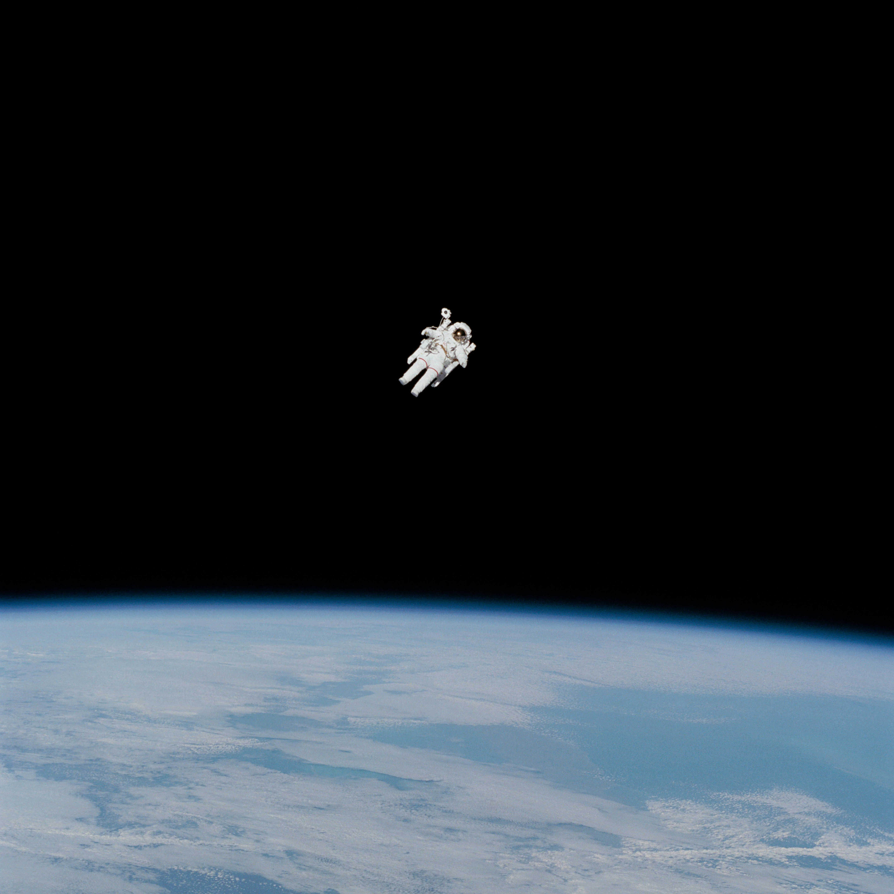

CURIOSITY IS
THE CONSTANT.
Engineer. Teammate. Explorer. Always looking for the next challenging problem.

AD ASTRA PER ASPERAAt the intersection
of code and the world.
I'm from MA, and attend UMass Amherst for Computer Science. I love working at the cross section of industries, technology, and business where research, engineering, and collaboration pave the way for cutting edge discovery. Particularly, I'm interested in software that controls physical assets. This passion has led to products that operate under the most challenging domains and constraints. My work is used everywhere — land, air, and space — where failure is not an option. With flight-critical and crewed systems at stake, I develop with safety, redundancy, and performance in mind.
In my free time, I love staying active. I've played soccer for 16 years and enjoy going on runs. I'm also the captain for UMass Fusion Dance, bringing a new team to national competitions. For most of my life, I've been lucky to travel and I love taking trips with friends and family. If you don't see me outside, you can find me watching my Boston Sports Franchises beating your favorite teams!
UMASS
AMHERST.
Bachelor of Science in Computer Science
Junior / COMMONWEALTH HONORS COLLEGEHonors & awards
- Amy Mick Soccer Scholarship
- Academic Dean's List 3/3 semesters
- Member of Commonwealth Honors College
Beyond the classroom
- Mass Mirchi - Lead Choreographer
- UMass Robotics - Software Engineer
- Machine Learning Club - Member
- CicSoft - Member
- South Asian Student Association - Member
Coursework
- Object-Oriented ProgrammingPython/Java
- Data StructuresJava
- C Programming LanguageC
- Programming MethodologyJavaScript/TypeScript
- Computation
- Calculus II (Integral)
- Calculus III (Multivariate)
- Statistics
- Linear Algebra
- Physics I (Mechanics)
THE NEXT
CHAPTER↗
Have an interesting problem?
Let's build something that matters.